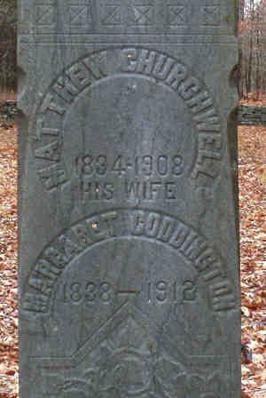

| 
Matthew CHURCHWELL (1834-1908) |
Matthew CHURCHWELL 2159,2163
Noted events in his life were: • Living: Kingston, Ulster Co., New York. 2159 • Census, 1880, Olive, Ulster Co., New York. 2159 Matthew married Margaret CODDINGTON, daughter of Jacob CODDINGTON and Margaret VAN ETTEN, on 16 Feb 1856 in Napanoch, Ulster Co., New York.2159 (Margaret CODDINGTON was born on 18 Apr 1838 in , , New York,21,136,2163 died in 1912 2163,4937 and was buried in Sand Hill Cmty, Rochester (Accord), Ulster Co., New York 2163.) |
|
only search Stockdale Coddington Genealogy |
Table of Contents | Surnames | Name List
This website was created 9 Apr 2025 with Legacy 10.0, a division of MyHeritage.com; content copyrighted and maintained by coddgenealogy at gmail d0t com